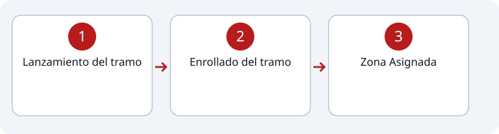

1
Estación #1
Entrada Forzada y Tendido enrollado simple de manguera de 2 ½ pulgadas.
Recorrido de la estación

Pasos
2
Enrollado del tramo
3
Zona Asignada
Indicaciones
- El enrollado debe ser sin pliegue; debe estar bien enrollado.
- Zona Asignada
- Colocar el tramo en la zona asignada "de pie" o "en vertical".
- Si el tramo cae existirá una penalización.
- Si el tramo cae fuera del área o el participante lo coloca fuera del área asignada, el equipo tendrá una penalización de 2 segundos.